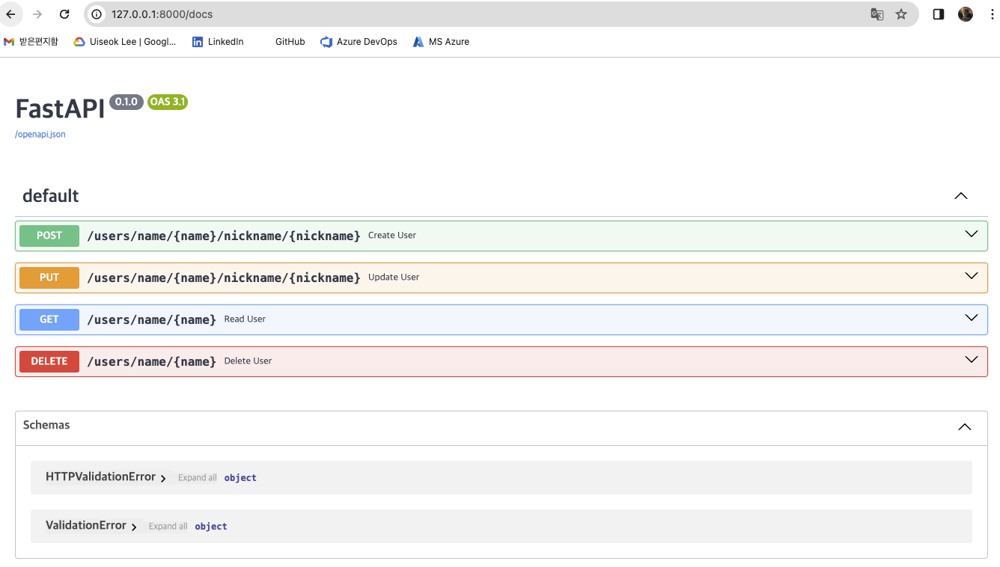
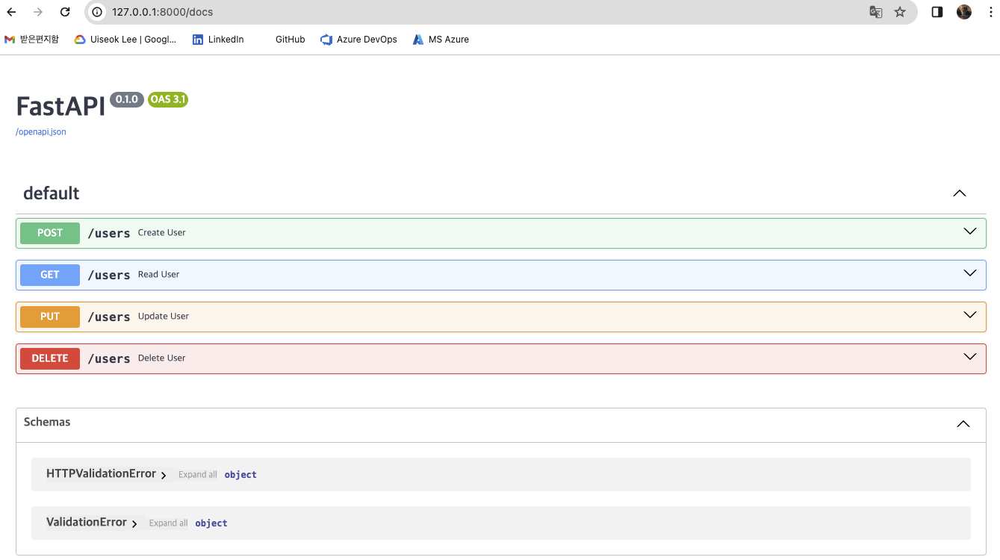

MLOps for MLE - 10
Summary
- FastAPI 을 이용하여 CRUD 를 수행하는 API 작성
실습을 진행했던 코드를 보고싶으시다면 여기를 눌러주세요
실습
1. API 명세서 작성
CRUD : Create, Read, Updater, Delete 의 합친 단어
1.1 Path Parameter 아용
Path Parameter 의 경우 각 API 에서 사용되는 파라미터를 Path에 포함시켜 전달함
이를 고려하여 명세서를 작성하면 다음과 같음
Create
이름과 별명을 입력하여 사용자를 생성함
POST /users/name/{name}/nickname/{nickname}Read
이름을 입력하여 해당 이름을 가진 사용자의 별명을 반환
GET /users/name/{name}Update
이름과 새로운 별명을 입력하여 해당 이름을 가진 사용자의 별명을 업데이트
PUT /users/name/{name}/nickname/{nickname}Delete
이름을 입력하여 해당 이름을 가진 사용자의 정보를 삭제
DELETE /users/name/{name}
1.2 Query Parameter 이용
Query Parameter 의 경우 각 API 에서 사용되는 파라미터를 Query 형태로 전달함
이를 고려하여 명세서를 작성하면 다음과 같음
Create
POST /users?name=hello?nickname=worldRead
GET /users?name=helloUpdate
PUT /users?name=hello&nickname=world2Delete
DELETE /users?name=hello
2. API 구현
작성한 명세서를 FastAPI 를 이용해 구현
FastAPI 클래스의 인스턴스를 생성한 후 입력받은 데이터를 저장할 수 있도록 USER_DB 를 생성
또한 메모리에 존재하지 않는 이름에 대한 요청이 들어온 경우 에러를 발생할 수 있도록 HTTPException 을 이용하여 NAME_NOT_FOUND 를 선언
from fastapi import FastAPI, HTTPException
# Create a FastAPI instance
app = FastAPI()
# User database
USER_DB = {}
# Fail response
NAME_NOT_FOUND = HTTPException(status_code=400, detail="Name not found.")2.1 Path Parameter 이용
Create
이름과 별명을 입력 받아
USER_DB에 정보를 저장하고 상태 정보를 return@app.post("/users/name/{name}/nickname/{nickname}") def create_user(name: str, nickname: str): USER_DB[name] = nickname return {"status": "success"}Read
이름을 입력 받아
USER_DB에서 별명을 찾아 return@app.get("/users/name/{name}") def read_user(name: str): if name not in USER_DB: raise NAME_NOT_FOUND return {"nickname": USER_DB[name]}Update
이름과 새로운 별명을 입력 받아
USER_DB의 정보를 업데이트하고 상태 정보를 return@app.put("/users/name/{name}/nickname/{nickname}") def update_user(name: str, nickname: str): if name not in USER_DB: raise NAME_NOT_FOUND USER_DB[name] = nickname return {"status": "success"}Delete
이름을 입력 받아
USER_DB에서 정보를 삭제하고 상태 정보를 return@app.delete("/users/name/{name}") def delete_user(name: str): if name not in USER_DB: raise NAME_NOT_FOUND del USER_DB[name] return {"status": "success"}
이를 합치면 코드는 다음과 같음
# crud_path.py
from fastapi import FastAPI, HTTPException
# Create a FastAPI instance
app = FastAPI()
# User database
USER_DB = {}
# Fail response
NAME_NOT_FOUND = HTTPException(status_code=400, detail="Name not found.")
@app.post("/users/name/{name}/nickname/{nickname}")
def create_user(name: str, nickname: str):
USER_DB[name] = nickname
return {"status": "success"}
@app.get("/users/name/{name}")
def read_user(name: str):
if name not in USER_DB:
raise NAME_NOT_FOUND
return {"nickname": USER_DB[name]}
@app.put("/users/name/{name}/nickname/{nickname}")
def update_user(name: str, nickname: str):
if name not in USER_DB:
raise NAME_NOT_FOUND
USER_DB[name] = nickname
return {"status": "success"}
@app.delete("/users/name/{name}")
def delete_user(name: str):
if name not in USER_DB:
raise NAME_NOT_FOUND
del USER_DB[name]
return {"status": "success"}
https://localhost:8000/docs 에 접속2.2 Query Parameter 이용
Path Parameter 와 같이 명세서에 따라 작성하고 코드를 하나로 합치면 다음과 같음
# crud_query.py
from fastapi import FastAPI, HTTPException
# Create a FastAPI instance
app = FastAPI()
# User database
USER_DB = {}
# Fail response
NAME_NOT_FOUND = HTTPException(status_code=400, detail="Name not found.")
@app.post("/users")
def create_user(name: str, nickname: str):
USER_DB[name] = nickname
return {"status": "success"}
@app.get("/users")
def read_user(name: str):
if name not in USER_DB:
raise NAME_NOT_FOUND
return {"nickname": USER_DB[name]}
@app.put("/users")
def update_user(name: str, nickname: str):
if name not in USER_DB:
raise NAME_NOT_FOUND
USER_DB[name] = nickname
return {"status": "success"}
@app.delete("/users")
def delete_user(name: str):
if name not in USER_DB:
raise NAME_NOT_FOUND
del USER_DB[name]
return {"status": "success"}
https://localhost:8000/docs 에 접속